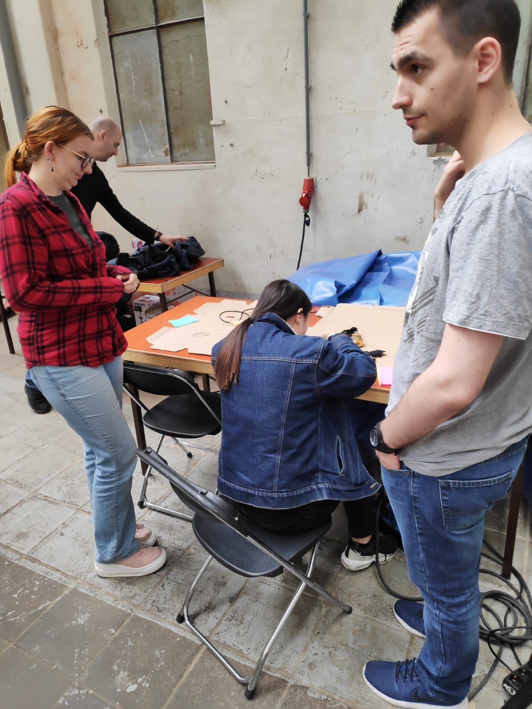
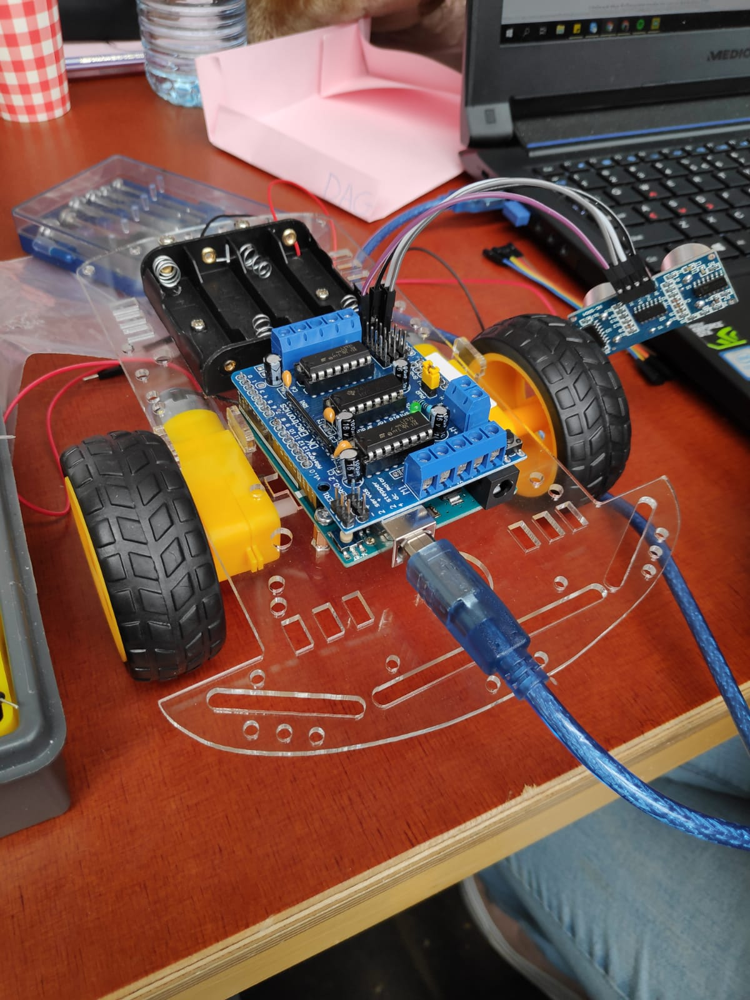
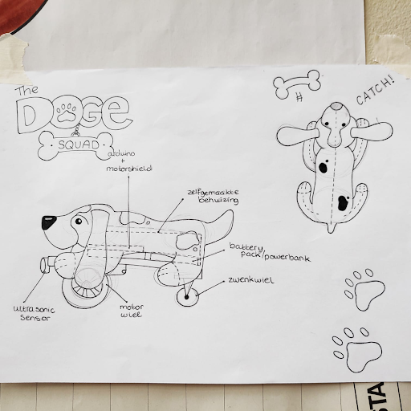
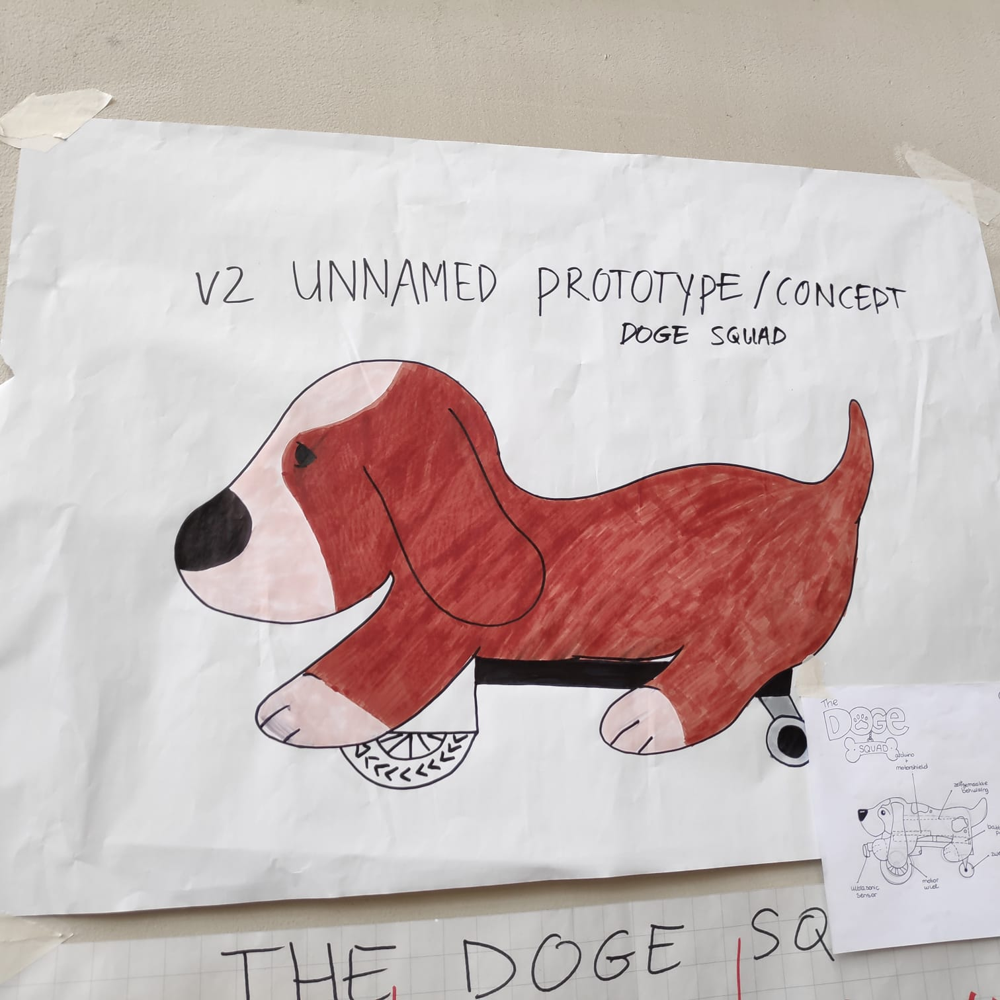
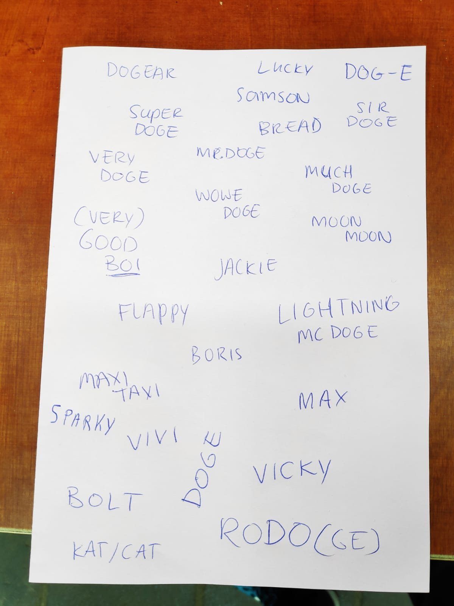
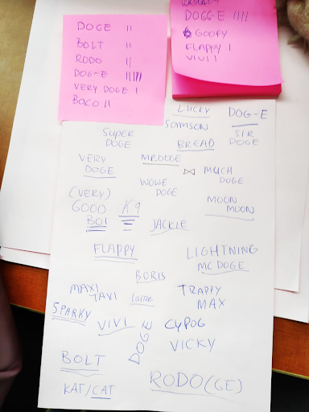

Lab Weeks - Dag 3
Vandaag begonnen we met het solderen van de Arduino aan het schild voor de batterij. We werden geholpen door Emma.
Het resultaat:
Naast het verbinden van de Arduino met het battery shield hebben we ook gekeken naar het rijden zelf. De auto rijdt namelijk nog niet netjes vooruit, terwijl dat wel de bedoeling is. We gebruiken momenteel 2 wielen die de aandrijving verzorgen. Daarnaast is er achterop nog een wiel wat in alle kanten kan draaien. Dat noemen we een ‘trailing wheel’. We denken dat dit het rijden niet ten goede komt. Uiteindelijk willen we kijken of we ook een auto kunnen regelen met 4 wielen, zodat we dit probleem kunnen voorkomen. Andere groepen met auto’s met 4 wielen zien er namelijk veelbelovend uit tijdens hun tests. Nicolette, Dennis en ik waren voornamelijk bezig met het werken aan de auto zelf. Hiba en Danique werkten ondertussen aan wat concept art voor ons project. Zie onderstaande afbeeldingen.

Deze namen zijn verzonnen door ons groepje voor de robot hond. Ik ben vervolgens met deze lijst rondgegaan om te kijken wat allerlei mensen een geschikte naam vonden voor ons project. Er zijn uiteindelijk nog wat namen bijgekomen die mensen tijdens het testen hebben gesuggereerd.
Uiteindelijk is dit het resultaat van het testen van de naam voor de robot hond. DOG-E was met afstand de populairste naam. Tijdens het verzinnen van de namen zei iemand dat de proximity sensoren leken op de ogen van WALL-E. Toen ik dat hoorde moest ik gelijk denken aan de naam DOG-E. Niet erg origineel, maar blijkbaar vonden mensen het wel de beste naam die op de lijst stond. Op onderstaande afbeelding zien we de resultaten van het testen met de verschillende namen.
Aan het einde van dag 3 hebben we een battery shield op de arduino geplaatst. Om ervoor te zorgen dat de twee verbinding maken is er gesoldeerd. De auto kon vandaag rijden zonder aan een kabel vast te zitten. De batterijen op de auto voorzagen namelijk de stroom voor de motoren. Voor morgen gaan we werken aan het oplossen van 2 problemen. Ten eerste rijdt de auto nog niet netjes rechtdoor. Om dit te bereiken gaan we kijken of we bepaalde sensoren kunnen gebruiken die meten hoeveel ieder wiel draait. Die data is handig, zo kunnen we namelijk 1 wiel anders afstellen als dat wiel meer draait dan het andere wiel. Dit is dus een manier waarop we de auto rechter vooruit kunnen laten rijden.
Het andere probleem waar we aan gaan werken is het monteren, gebruiken en testen van de proximity sensors. Die gebruiken we zodat de auto niet overal tegenaan rijdt. De sensoren hebben we vandaag al gemonteerd. Ook hebben we in de IDE software kunnen zien dat we bepaalde gegevens binnen krijgen. Er wordt echter nog niks met deze gegevens gedaan. We zullen hier dus code voor moeten bedenken.
We werken steeds aan maar 1 functie tegelijk. Op advies van een van de gastsprekers werken we namelijk liever aan de kwaliteit dan aan de kwantiteit. Zodra DOG-E redelijk kan bewegen kunnen we als groep besluiten wat de volgende functionaliteit moet worden voor ons project.